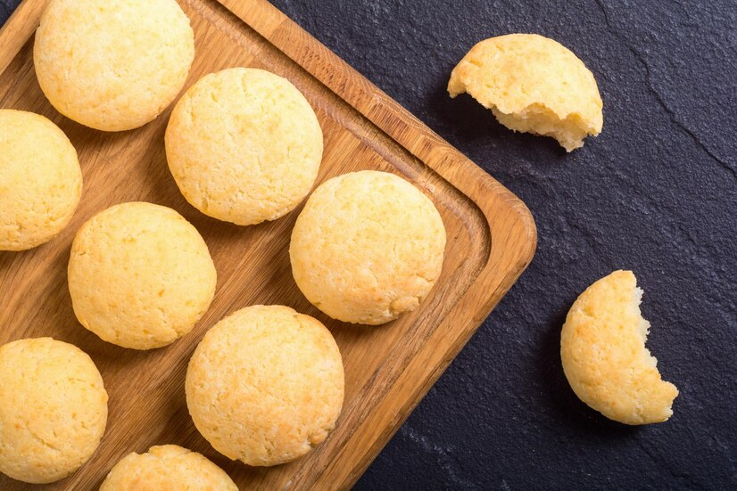

Butter Cookies

Trying to only eat a few becomes near impossible once you've had your first cookie.
INGREDIENTS
- 250g Flour
- 100g White Sugar
- 100g Butter
- 1 Egg
- 1 Egg Yolk
- 1 Vanilla Sugar Sachet
STEPS
- Preheat the oven to 175°C.
- Separate the egg white and the egg yolk. The egg yolk you can put in the mixing bowl. Beat the egg white
till its consistency doesn't droop when you scoop
- Add the rest of the ingredients to the mixing bowl, the last ingredient being the whipped egg whites.
- Mix everything together till it has a consistent consistency throughout. Roll the dough till it's about
2/4mm thick, and cut out your preferred choice of shapes.
- Bursh the egg yol over the eggs, and sprinkle some extra sugar on top.
- Optional: You can add a small nut on top, or put some chocolate chips.
- If oven is preheated, bake the biscuits for about 10 minutes or until golden light brown in color. Let
cool and enjoy!